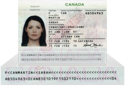
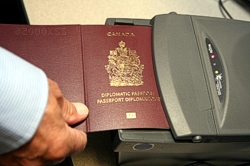

À propos des passeports électroniques

À compter du 1 juillet 2013, tous les nouveaux passeports canadiens délivrés seront électroniques. À ce moment-là, les requérants adultes pourront choisir un passeport électronique qui est valide pour 5 ou 10 ans, et ce, pour les premières demandes ainsi que les renouvellements. Les passeports électroniques pour enfants seront valides pour un maximum de 5 ans.
Sécurité accrue
Le passeport électronique canadien sera doté d’une puce électronique intégrée dans la couverture arrière du livret, ce qui renforcera la sécurité du passeport et le rendra plus difficile à falsifier.
La puce du passeport électronique contient les mêmes renseignements personnels que ceux figurant à la page 2 du passeport (à l’exception de la signature du titulaire), la photo du titulaire ainsi qu’une caractéristique de sécurité propre au pays (aussi appelée signature) qui prouve que le passeport a été délivré par le gouvernement du Canada.
Protection des renseignements
Zone de lecture automatique
Zone de lecture automatique
Lorsque des renseignements sont stockés sur la puce du passeport canadien, la puce est verrouillée électroniquement. Autrement dit, même si quelqu’un était capable de falsifier les données se trouvant sur la puce, cette dernière indiquerait que le verrou a été brisé, et la fraude serait détectée.
La puce du passeport électronique canadien est une puce de proximité sans contact qui doit être tenue à moins de dix centimètres du lecteur de passeport électronique afin d’être lue. De plus, on ne peut accéder aux données sur la puce à moins d’avoir d’abord lu la zone de lecture automatique à la page 2, ce qui signifie que le livret de passeport doit être ouvert.
Par conséquent, il est tout à fait improbable que les données personnelles stockées sur la puce du passeport électronique puissent être lues à votre insu.
Lecteur
Un passeport électronique lu par un lecteur
Les autorités frontalières équipées de lecteurs de passeports électroniques inséreront le passeport électronique du voyageur dans un scanneur qui lira la zone de lecture automatique d’abord, et ensuite la puce. La machine vérifie également d’autres caractéristiques de sécurité, comme la signature du pays. Les autorités frontalières qui ne sont pas équipées de lecteurs de passeports électroniques continueront d’examiner les passeports du voyageur comme ils le font actuellement, c’est-à-dire en regardant les autres caractéristiques de sécurité telles que les images holographiques.
Une technologie éprouvée
Quelque 95 pays, dont les États-Unis, le Royaume-Uni et la France, utilisent des passeports électroniques depuis plusieurs années déjà et n’ont signalé aucune défaillance de la puce électronique. Dans le cadre d’un projet pilote qui a vu le jour en janvier 2009, Passeport Canada a déjà délivré plus de 50 000 passeports diplomatiques et spéciaux contenant une puce électronique, et aucun problème n’a été signalé.
Dans le cas peu probable où la puce ne pourrait être lue, le passeport sera quand même valide.
Un processus transparent
Aucun autre renseignement sur vous ou vos voyages ne sera stocké sur la puce. La puce ne contiendra que les renseignements qui figurent à la page 2 du passeport, votre photo, ainsi que la signature du gouvernement du Canada. Des lecteurs de passeports électroniques seront installés dans les 34 bureaux de Passeport Canada afin que les titulaires de passeport puissent, s’ils le souhaitent, accéder à l’information stockée sur la puce de leur passeport et s’assurer qu’elle est exacte.